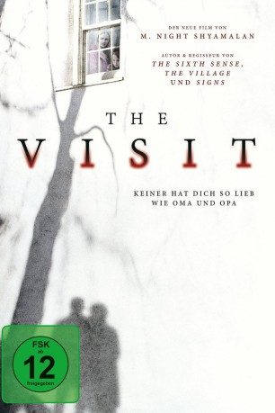

#3023 The Visit
 
 IMDB-Wertung: 6.2 / 10
IMDB-Wertung: 6.2 / 10  Metascore: 55
Metascore: 55 
Als eine junge Mutter (Kathryn Hahn) von ihren Eltern gefragt wird, ob ihre Enkel eine Woche bei ihnen verbringen können, treten Rebecca (Olivia DeJonge) und Tyler (Ed Oxenbould) freudig die Zugfahrt zur abgelegenen Farm ihrer Großeltern an. Dort angekommen, verbringen die Vier zunächst einen harmonischen und spaßigen Tag miteinander. Lediglich die strenge Vorgabe des Großvaters (Peter McRobbie), das Zimmer nach 21.30 Uhr nicht mehr zu verlassen, lässt die beiden Kinder etwas stutzig werden. Doch schon wenig später müssen sie feststellen, dass die Regel nicht ohne Grund existiert.
Jahr: 2015
Dauer: 94 Minuten
FSK: 12
Land: USA Studio: Universal PicturesTonspuren: DTS-HD - ,
Untertitel: , Englisch, Französisch, , , , , , , , , , , ,
Auflösung: 1080p (1920x1040) Größe: 11161 MB
Genre: Thriller, Horror
Regisseur:  M. Night Shyamalan
M. Night Shyamalan
Drehbuch: M. Night Shyamalan
Soundtrack:
Darsteller:
- Olivia DeJonge als Becca
- Ed Oxenbould als Tyler
- Deanna Dunagan als Nana
 Peter McRobbie als Pop Pop
Peter McRobbie als Pop Pop Kathryn Hahn als Mom
Kathryn Hahn als Mom- Celia Keenan-Bolger als Stacey
- Samuel Stricklen als Conductor
 Patch Darragh als Dr. Sam
Patch Darragh als Dr. Sam- Jorge Cordova als Miguel
- Benjamin Kanes als Dad
- Ocean James als Young Becca
- Seamus Moroney als Young Tyler
- Kevin Austra als Street Walker , uncredited
 Richard Barlow als Police Officer , uncredited
Richard Barlow als Police Officer , uncredited- Evan Charles als Surfer , uncredited
- Michelle Rose Domb als Cruise Passenger , uncredited
 Brian Gildea als Police Officer , uncredited
Brian Gildea als Police Officer , uncredited Basil Kershner als Masonville Resident , uncredited
Basil Kershner als Masonville Resident , uncredited- Shelby Lackman als J. Smith , uncredited
- Michael Mariano als Hairy Chested Contestant , uncredited
- Gabrielle Pentalow als Dougie Girl , uncredited
- Jon Douglas Rainey als Police Officer , uncredited
- Zachary Vazquez als Cruise Passenger , uncredited
- Steve Annan als Man on the Street
- John Buscemi als Police Officer , uncredited
- Shawn Gonzalez als Train Passenger , uncredited
- Aileen Michelle als Cruise Goer , uncredited
Datei: X:\2015(N-Z)\Visit, The (2015, FSK12, 1920x1040).mkv seit 19.01.2016
Festplatte: HD 2015(A-Z)
 Es gibt insgesamt 161 Filme in der Gruppe '2015(N-Z)'
Es gibt insgesamt 161 Filme in der Gruppe '2015(N-Z)'